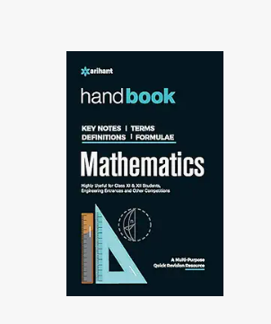

₹999/-

About this item:
Mathematics of higher level has too many theories, rules and remembering all of them on tips all the time is not an easy task. Handbook of Mathematics is an important, useful and compact reference book suitable for everyday study, problem solving or exam revision for class XI XII. This book is a multi-purpose quick revision resource that contains almost all key notes, terms, definitions and formulae that all students professionals in mathematics will want to have this essential reference book within easy reach. Its unique format displays formulae clearly, places them in the context and crisply identifies describes all the variables involved, summary about every equations and formula that one might want while learning mathematics is one of the unique features of the book, a stimulating and crisp extract of fundamental mathematics is to be enjoyed by the beginners and experts equally. The book is from its first edition and one of the most useful books of its type. Table of content Sets, Relations and Binary Operations, Complex Numbers, Quadratic Equations and Inequalities, Sequences and Series, Permutation and Combinations, Binomial Theorem and Mathematical Induction, Matrices, Determinant, Probability, Trigonometric Functions, Inverse Trigonometric Functions, Solution of Triangles, Heights and Distances, Rectangular Axis and Straight Lines, Circles, Parabola, Ellipse, Hyperbola, Functions, Limits, Continuity and Differentiability, Derivatives, Applications of Derivatives, Indefinite Integrals, Definite Integrals, Applications of Integrations, Differential Equations, Vectors, Three Dimensional Geometry, Statistics, Mathematical Reasoning and Boolean Algebra, Numerical Method, Linear Programming Problem, Computing, Group Theory, Elementary Arithmetic-I, Elementary Arithmetic-II, Percentage and Its Applications, Elementary Algebra, Logarithm, Geometry, Mensuration.